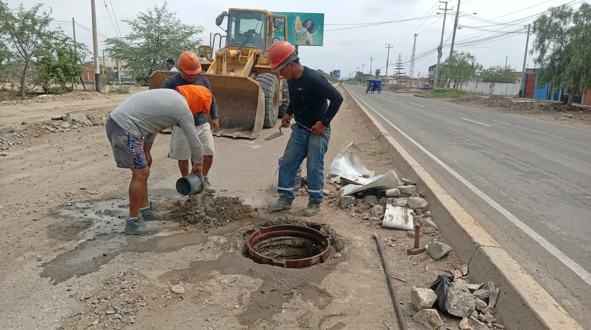

¿Hay agua hoy en tu zona?
EPSEL lleva el agua potable y el desagüe a Chiclayo, Lambayeque y Ferreñafe. Escribe tu zona y te decimos si hoy hay corte o si pasa la cisterna.
Conoce AguaYa
La cisterna en tu celular: mira cuándo llega la cisterna a tu casa y recibe un aviso cuando esté cerca. Sin instalar nada: entras con tu DNI y un código por SMS.
Entrar a AguaYaTu próxima cisterna con día, turno y placa.
El camión en el mapa mientras reparte en tu zona.
Reporta y califica si no llegó o si te dieron poca agua.
La cisterna esta semana
-
Cargando los horarios de cada zona…
De dónde viene tu agua
El agua de Chiclayo baja de la sierra por el río Chancay, se guarda en Tinajones, reposa en las lagunas Boró y se limpia en las plantas de EPSEL antes de llegar a tu casa.
El reservorio Tinajones guarda hasta 320 millones de metros cúbicos del río Chancay y de los ríos Conchano y Chotano. Tiene 37 metros de hondo y un espejo de agua de 20 km².

Desde Tinajones el agua baja por el canal Taymi. En la toma Bola de Oro se separan unos 1400 litros por segundo que van, por el canal Las Mercedes, a las lagunas Boró.

En las lagunas Boró I y Boró II la tierra del agua se asienta en el fondo. Juntas guardan 2 millones de metros cúbicos: la reserva de la ciudad cuando el río baja.
La Planta N.º 1 limpia 700 litros por segundo y la N.º 2, 750. En cinco pasos:
- Coagulación: se agrega sulfato de aluminio para que la tierra se junte.
- Floculación: el agua se mueve despacio y la tierra forma grumos.
- Decantación: los grumos pesan y caen al fondo.
- Filtración: el agua pasa por capas de antracita, arena y grava.
- Desinfección: se agrega cloro para eliminar los microbios.
El agua limpia se guarda en reservorios y baja por las tuberías hasta tu caño. Donde la red no llega, EPSEL la lleva en camiones cisterna.

320 millones
de metros cúbicos de agua puede guardar el reservorio Tinajones.
El agua en números
1450 l/s
limpian juntas las dos plantas de Chiclayo.
80 litros
por casa al día, como mínimo, cuando llega la cisterna.
Pagos y trámites
Paga tu recibo con tu número de suministro, sin hacer cola.
EPSEL no cobra a domicilio. Paga solo en sus oficinas o en bancos y agentes autorizados.
Ver todo sobre pagos y trámitesDónde pagar tu recibo
BCP, BBVA, Interbank, Scotiabank y Banco de la Nación.
Agentes Western Union y Niubiz, y Yape.
Con tarjeta Visa en la oficina virtual.
En los centros de atención de EPSEL.
Oficina virtual
Saca un duplicado de tu recibo, consulta tu saldo, paga o pide una cita desde el celular. Entrar a la oficina virtual.
Conexión nueva y otros trámites
Para una conexión nueva lleva tu DNI, un documento de la casa (partida registral, título de COFOPRI o constancia de posesión) y un croquis. Ver todos los requisitos.
Para empresas: desagüe no doméstico (VMA)
Los negocios e industrias que echan agua usada al desagüe deben cumplir los Valores Máximos Admisibles. Qué son y qué normas aplican.
Atención y reclamos
Cómo hacer un reclamo
- Ten tu DNI con una copia y, si es por cobro, tu recibo.
- Preséntalo en la oficina virtual o en Av. Grau 451, Chiclayo.
- Guarda tu número de reclamo para seguirlo.
- EPSEL te responde en los plazos que fija SUNASS.
Oficinas y teléfonos
Local comercial: Av. Grau 451, Chiclayo, (074) 273609. Hay oficinas en 25 localidades de Chiclayo, Lambayeque y Ferreñafe.
Buscar la oficina de mi localidadInformación pública
Cuánto cumple EPSEL con las cisternas, lo que hace con el dinero de todos y cómo pedir cualquier documento.
- Las cisternas en cifrasCuántas paradas se atendieron, litros repartidos y calificación de los vecinos.
- Portal de TransparenciaPresupuesto, rendición de cuentas e indicadores de gestión.
- Pedir información públicaPide cualquier documento; la ley da 10 días hábiles para responder.
- Integridad y denuncias de corrupciónDenuncia un acto de corrupción de forma segura.
Nosotros
Desde 1930 llevamos el agua potable a Chiclayo.
Hoy EPSEL da agua y desagüe en Chiclayo, Lambayeque y Ferreñafe, con oficinas en 25 localidades. Está en el Régimen de Apoyo Transitorio del OTASS.